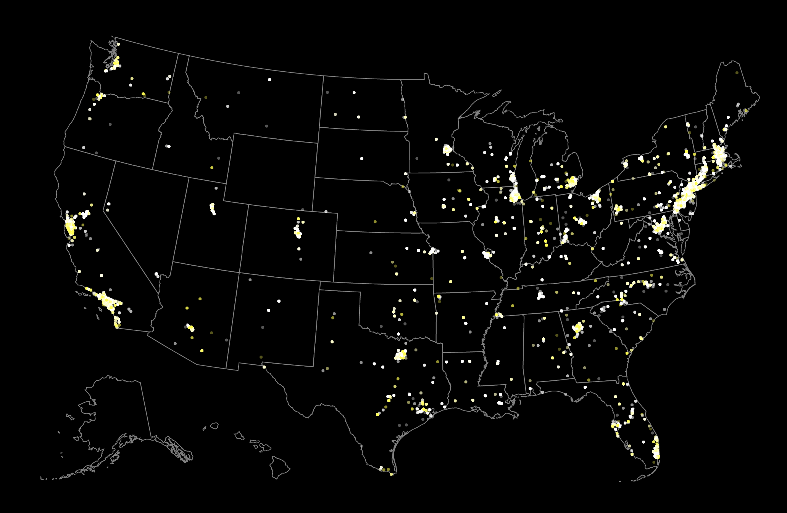

Conclusions

Growing
The total H1B petitions for both UX and Data Science is increasing every year.
DS > UX
The number of petitions for Data Science positions is much larger than UX.
2013 for Data Science
H1B Petition of Data Science positions in California and Texas increased dramatically after 2013.
NY, WA, CA
Most of high-salary positions come from NY, WA and CA.